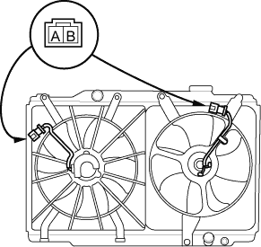
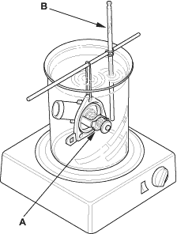

- Disconnect the 2P connectors from the radiator fan motor and condenser fan motor.
Terminal side of male terminals

- Test the motor by connecting battery power to the B terminal and ground to the A terminal.
- If the motor fails to run or does not run smoothly, replace it.

Replace the thermostat if it is open at room temperature.
To test a closed thermostat:
- Suspend the thermostat (A) in a container of water. Do not let the thermometer (B) touch the bottom of the hot container.

- Heat the water, and check the temperature with a thermometer. Check the temperature at which the thermostat first opens and at which it is fully open.
- Measure the lift height of the thermostat when it is fully open.
STANDARD THERMOSTAT
Lift height:
above 8.0 mm (0.31 in.)
Starts opening:
76 – 80°C (169 – 176°F)
Fully open:
90°C (194°F)